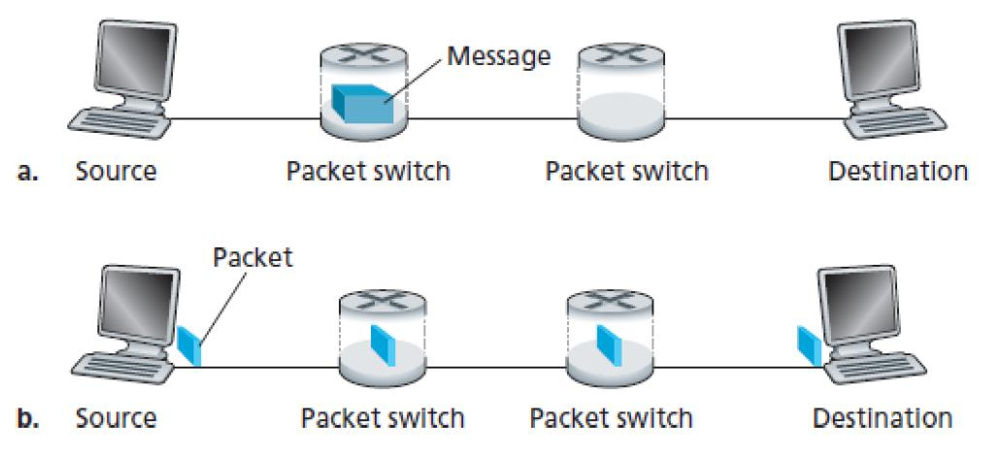

[연습문제] 데이터통신과네트워크 Computer Network and the Internet
2020-1:
Host A 와 Host B 가 30,000 km 떨어진 곳에 위치하고 있고 R=5Mbps 의 속도의 네트워크 링크로
연결되어져 있다 해당 네트워크의 propagation delay 는 𝟐.𝟓×𝟏𝟎^𝟖 meters/sec 이다
Host A 에서 Host B 로 1,000,000 bits 의 파일을 분할없이 한번에 보낸다고 가정했을 경우 파일을
보내는 시간동안 네트워크 링크에 존재하는 최대 비트 수는 얼마인가
(네트워크 링크는 H ost A 와 Host B 만 사용하는 링크임 , Mega = 10^6)
transmission delay: 0.2s
prop delay: 0.12s
600,000 bits
2020-2:
네트워크를 통해 사이즈가 큰 데이터를 보낼 때 일반적으로 해당 데이터를 작은 사이즈의
패킷으로 쪼갠 후 보내게 된다 해당 패킷들을 받는 수신자는 수신한 패킷들을 재조합 하여
데이터 원본을 수신한다 이러한 과정을 message segmentation 이라고 부르기도 한다
아래 그림은 message segmentation 이 없는 데이터 전송과 message segmentation 이 적용된
데이터 전송을 나타내고 있다 Source 에서 Destination 사이에는 스위치가 2 개가 존재하고 ,
Source 가 Destination 으로 보내려는 데이터 의 크기는 𝟏.𝟐×𝟏𝟎^𝟖 bits 이다 네트워크 링크 전송
속도는 R=4Mbps 일 때 아래 물음에 답하시오 propagation, queuing, and processing delays 는
무시한다

1 - Message segmentation 이 없는 데이터 전송 (위 그림의 (a)) 를 고려했을 때 Source 에서 Destination 까지 전체 데이터를 보내는데 걸리는 시간은 얼마인가?
3*L/R = 3 * 1.2 * 10^8 / 4 * 10^6 = 3 * (1.2 * 10^2 / 4) = 3 * 0.3 * 10^2 = 3 * 30 = 90s
2 - 전체 데이터가 1200 개의 패킷으로 나누어지고 각 패킷의 길이는 100,000bit 라고 가정해보자 Message segmentation 가 적용된 데이터 전송 (위 그림 의 (b)) 를 고려했을 때 Source 에서 Destination 까지 첫번째 패킷을 보내는데 걸리는 시간은 얼마인가?
100,000 / 5,000,000 = 1/50 = 0.02s,
0.02s * 3 = 0.06s
3 - 전체 데이터가 1200 개의 패킷으로 나누어지고 각 패킷의 길이는 100,000bit 라고 가정해보자 Message segmentation 가 적용된 데이터 전송 (위 그림 의 (b)) 를 고려했을 때 Source 에서 Destination 까지 전체 패킷 총 1200 개의 패킷 을 보내는데 걸리는 시간은 얼마인가?
하나의 패킷이 걸리는 시간 0.6s, 하나의 구간을 통과하는 시간 0.2s, 3개를 동시에 하므로 1200 * 0.2s = 240s - 0.4s = 239.6s
4 - message segmentation 장단점
장점: message를 나눠서 보내면 중간에 라우터에서도 동시에 전송을 할 수 있어서 시간이 짧아짐
단점: 패킷이 중간에 없어질 수 도있음